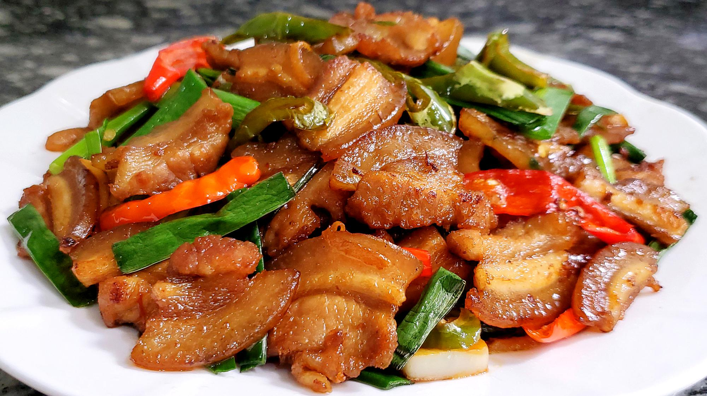

回锅肉
回锅肉是川菜中的传统名菜，有"川菜之首"的美誉。选用五花肉先煮后炒，色泽红亮，肥而不腻， 咸鲜微辣，回味略甜。所谓"回锅"，就是再次烹调的意思，成品菜色香味俱全，是四川家家会做的家常菜。
辣度:
20
准备时间(分钟)
25
烹饪时间(分钟)
3-4
份量(人)
主要食材
- 五花肉 400克
- 青蒜苗 100克
- 郫县豆瓣酱 2汤匙
- 甜面酱 1汤匙
- 豆豉 1汤匙
- 生姜 3片
- 大蒜 3瓣
- 料酒 1汤匙
- 白糖 1茶匙
- 酱油 1汤匙
- 食用油 适量
营养成分（每100克）
- 热量：285千卡
- 蛋白质：12.5克
- 脂肪：24.3克
- 碳水化合物：4.2克
- 纤维素：0.8克
- 钠：450毫克
详细做法步骤
- 将整块五花肉放入冷水锅中，加入姜片和料酒，大火煮开后转中小火煮约20分钟。
- 用筷子能轻松插入肉中且无血水渗出时，捞出放凉。煮肉的汤可以留着做其他菜用。
- 将放凉的五花肉切成薄片，厚度约2-3毫米，尽量切得均匀。
- 青蒜苗洗净，将蒜白部分用刀拍一下，然后斜切成段，蒜叶部分也切成段，分开放置。
- 郫县豆瓣酱和豆豉剁碎，这样更容易出香味，大蒜切片备用。
- 热锅少油，放入切好的肉片，中小火煸炒至肉片出油、卷曲、呈灯盏窝状。
- 将肉片推至锅边，放入郫县豆瓣酱和豆豉，炒出红油和香味。
- 加入甜面酱、蒜片继续翻炒均匀，让每片肉都裹上酱料。
- 加入酱油和白糖调味，翻炒均匀。
- 先放入青蒜苗的白色部分翻炒几下，再放入绿色部分快速翻炒。
- 炒至蒜苗断生即可出锅，不要过度翻炒以免蒜苗变软失去脆嫩口感。
烹饪小贴士
- 选择肥瘦相间的五花肉，层次分明的最好
- 煮肉时不要煮得太熟，用筷子能插透即可，否则炒制时容易碎
- 肉片一定要切得薄而均匀，这样才容易形成"灯盏窝"
- 煸炒肉片时要有耐心，用中小火慢慢煸出油脂，这样吃起来不腻
- 郫县豆瓣酱和豆豉一定要剁碎，这样才能更好地释放香味
- 青蒜苗的白色和绿色部分要分开放，先炒白色部分再放绿色部分
- 甜面酱不宜过多，否则会掩盖其他味道
- 正宗回锅肉是不加配菜的，但家庭制作可以加入青椒、卷心菜等
历史与文化
回锅肉是四川传统菜式中家常菜肴的代表菜之一，属于川菜系列。制作原料主要有猪肉、青椒、蒜苗等，口味独特，色泽红亮，肥而不腻。
回锅肉起源于清代末期，由一位姓凌的翰林偶然发明。然而，真相并非如此，回锅肉的源头可以追溯到北宋，具体于何时诞生、由何人创制已无法考证。古时称为"油爆锅"，四川地区大部分家庭都会制作。所谓回锅，就是再次烹调的意思。回锅肉在川菜中的地位是非常重要的，一直被认为是川菜之首，川菜之化身，提到川菜必然想到回锅肉。